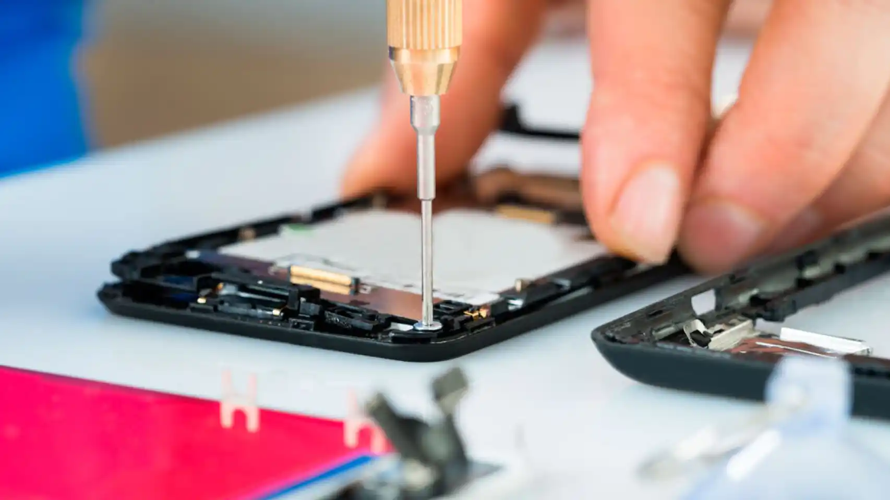

Soluciones rápidas, confiables y garantizadas
Reparación, mantenimiento y venta de computadoras y celulares
Nosotros
En Soluciones Tecnológicas entendemos que tu celular y tu computadora son esenciales para tu día a día. Por eso, desde 2015, hemos perfeccionado nuestros procesos para ofrecer servicios de la más alta calidad. Cada reparación que realizamos cuenta con garantía, asegurando que tu equipo quede en perfectas condiciones.
Tenemos amplia experiencia con marcas como LG, Motorola, Samsung, Huawei, Xiaomi, iPhone y muchas más.

Servicios
¿Problemas con tu celular o computadora? Nosotros tenemos la solución. Aquí te dejamos algunos de nuestros servicios más populares:
- Cambio de pantallas: Adiós a las grietas y problemas de visibilidad.
- Reemplazo de baterías: Dale nueva vida a tu dispositivo con una batería nueva.
- Actualización de software: ¡Recupera la funcionalidad de tu dispositivo!
- Reparación de centros de carga: ¿Tu celular ya no carga bien? Lo solucionamos.
- Diagnóstico y reparación de fallas: Bocinas, micrófonos, antenas, baterías… ¡lo que sea!
- Recuperación de datos: Recuperamos tus fotos, videos y documentos importantes.
- Optimización de computadoras: ¡Haz que tu computadora vuelva a ser rápida y eficiente!
- Venta de accesorios: Micas, fundas y chips para completar tu experiencia tecnológica.
¿Tienes un problema distinto? Contáctanos y encontraremos la mejor solución para ti.
